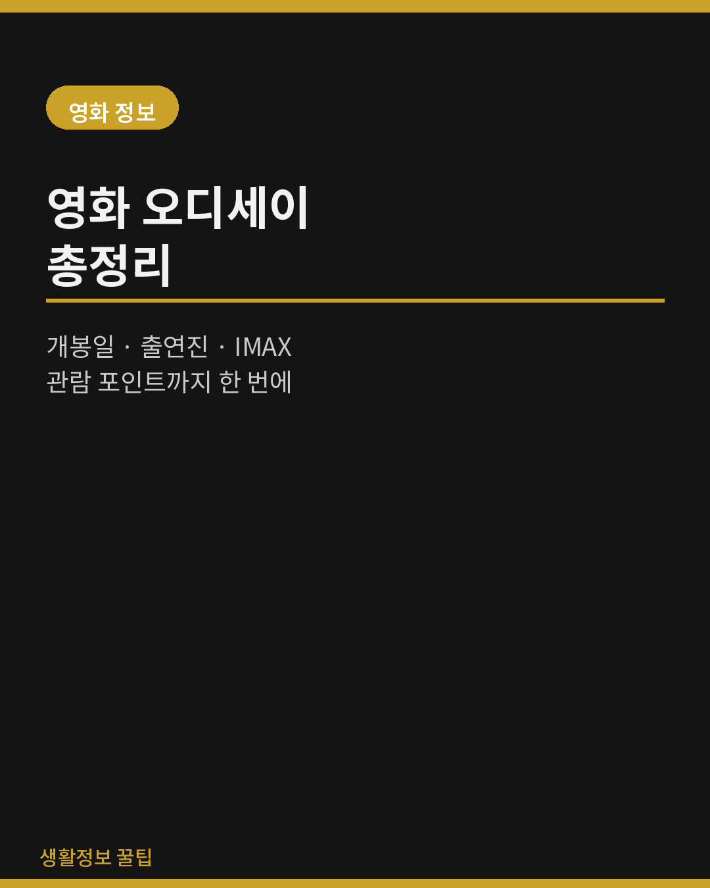
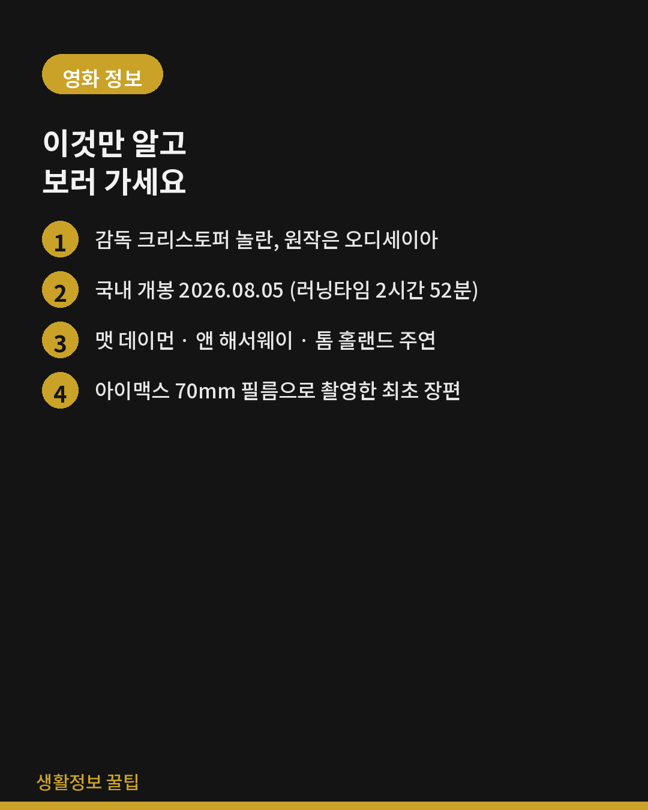
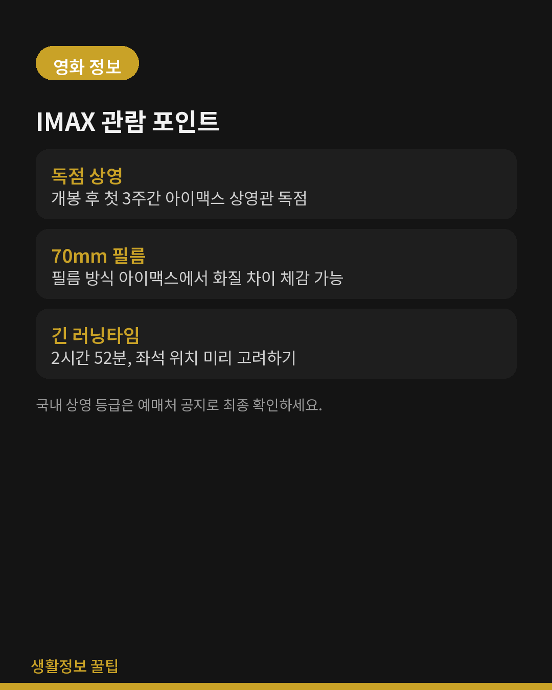

<meta charset="utf-8">
<title>영화 오디세이 총정리 — 야간비행 일지</title>
<meta name="description" content="크리스토퍼 놀란 감독의 오디세이, 개봉일부터 출연진, 아이맥스 70mm 관람 포인트, 원작 오디세이아와의 차이까지 정리했습니다.">
<meta name="viewport" content="width=device-width, initial-scale=1">
<link rel="canonical" href="https://danielmoon82.github.io/moon/posts/odyssey.html">
<meta property="og:type" content="article">
<meta property="og:title" content="영화 오디세이 총정리 — 개봉일·출연진부터 IMAX 관람 포인트까지">
<meta property="og:description" content="크리스토퍼 놀란 감독의 오디세이, 개봉일부터 출연진, 아이맥스 70mm 관람 포인트, 원작 오디세이아와의 차이까지 정리했습니다.">
<meta property="og:image" content="https://danielmoon82.github.io/moon/posts/images/odyssey-cover.png">
<link rel="preconnect" href="https://fonts.googleapis.com">
<link rel="preconnect" href="https://fonts.gstatic.com" crossorigin>
<link rel="stylesheet" href="https://fonts.googleapis.com/css2?family=Hahmlet:wght@400;600;800&family=IBM+Plex+Mono:wght@400;500&family=IBM+Plex+Sans+KR:wght@300;400;500;600&display=swap">

<style>
  :root{
    --paper:#E7EBF1;
    --surface:#F4F6FA;
    --surface-2:#DCE2EC;
    --ink:#0F1729;
    --ink-2:#3D4A63;
    --ink-3:#6B7891;
    --line:#C6CEDB;
    --line-soft:#D6DCE6;
    --accent:#B06A15;
    --accent-bright:#C2761A;
    --accent-soft:rgba(176,106,21,.11);

    --f-display:"Hahmlet",'Nanum Myeongjo',"Apple SD Gothic Neo",serif;
    --f-body:"IBM Plex Sans KR","Apple SD Gothic Neo","Malgun Gothic",sans-serif;
    --f-mono:"IBM Plex Mono","SFMono-Regular",Consolas,monospace;

    --pad:clamp(20px,5vw,64px);
  }
  @media (prefers-color-scheme:dark){
    :root:not([data-theme="light"]){
      --paper:#0B1120;
      --surface:#121A2C;
      --surface-2:#1A2439;
      --ink:#E9EEF7;
      --ink-2:#A9B5C9;
      --ink-3:#72809A;
      --line:#26314A;
      --line-soft:#1D2739;
      --accent:#E8A33D;
      --accent-bright:#F0B45C;
      --accent-soft:rgba(232,163,61,.13);
    }
  }
  :root[data-theme="dark"]{
    --paper:#0B1120;
    --surface:#121A2C;
    --surface-2:#1A2439;
    --ink:#E9EEF7;
    --ink-2:#A9B5C9;
    --ink-3:#72809A;
    --line:#26314A;
    --line-soft:#1D2739;
    --accent:#E8A33D;
    --accent-bright:#F0B45C;
    --accent-soft:rgba(232,163,61,.13);
  }

  *{box-sizing:border-box;}
  body{
    margin:0;
    background:var(--paper);
    color:var(--ink);
    font-family:var(--f-body);
    font-weight:300;
    font-size:16px;
    line-height:1.75;
    -webkit-font-smoothing:antialiased;
  }
  a{color:inherit;}
  :focus-visible{outline:2px solid var(--accent-bright);outline-offset:3px;border-radius:2px;}
  img{max-width:100%;height:auto;}

  .wrap{max-width:720px;margin:0 auto;padding-inline:var(--pad);}

  .nav{
    position:sticky;top:0;z-index:20;
    background:color-mix(in srgb, var(--paper) 88%, transparent);
    backdrop-filter:saturate(180%) blur(12px);
    border-bottom:1px solid var(--line);
  }
  .nav-in{display:flex;align-items:center;justify-content:space-between;gap:20px;height:58px;}
  .brand{
    font-family:var(--f-display);
    font-weight:600;font-size:1rem;letter-spacing:-.02em;
    text-decoration:none;color:var(--ink);
  }
  .back{
    font-family:var(--f-mono);
    font-size:.72rem;letter-spacing:.06em;
    color:var(--ink-3);text-decoration:none;
  }
  .back:hover{color:var(--accent);}

  .article{padding-block:clamp(40px,7vw,72px) clamp(56px,9vw,96px);}
  .eyebrow{
    font-family:var(--f-mono);
    font-size:.68rem;letter-spacing:.16em;text-transform:uppercase;
    color:var(--accent);margin:0 0 14px;
  }
  h1{
    font-family:var(--f-display);
    font-weight:800;font-size:clamp(1.7rem,4.6vw,2.5rem);
    line-height:1.28;letter-spacing:-.03em;
    margin:0 0 16px;
  }
  .lede{margin:0 0 10px;font-size:1rem;color:var(--ink-2);}
  .byline{
    font-family:var(--f-mono);font-size:.72rem;color:var(--ink-3);
    padding-bottom:26px;border-bottom:1px solid var(--line);margin-bottom:34px;
  }

  .hero{
    width:100%;border-radius:4px;border:1px solid var(--line-soft);
    margin-bottom:38px;display:block;
  }

  h2{
    font-family:var(--f-display);
    font-weight:600;font-size:1.3rem;letter-spacing:-.02em;
    margin:46px 0 14px;
  }
  p{margin:0 0 18px;color:var(--ink-2);}
  .article strong{color:var(--ink);font-weight:600;}

  .spec{
    list-style:none;margin:0 0 22px;padding:20px clamp(16px,3vw,24px);
    border:1px solid var(--line);border-radius:3px;background:var(--surface);
  }
  .spec li{
    display:flex;gap:14px;padding:7px 0;
    border-bottom:1px solid var(--line-soft);
    font-size:.92rem;color:var(--ink-2);
  }
  .spec li:last-child{border-bottom:0;}
  .spec b{
    flex:0 0 88px;font-weight:500;color:var(--ink-3);
    font-family:var(--f-mono);font-size:.74rem;letter-spacing:.04em;
    padding-top:3px;text-transform:uppercase;
  }

  ul.bullets{margin:0 0 20px;padding-left:20px;color:var(--ink-2);}
  ul.bullets li{margin-bottom:8px;}

  figure{margin:32px 0;}
  figure img{border-radius:4px;border:1px solid var(--line-soft);display:block;}
  figcaption{
    margin-top:10px;font-family:var(--f-mono);font-size:.7rem;
    color:var(--ink-3);text-align:center;
  }

  .callout{
    margin:30px 0;padding:18px clamp(16px,3vw,22px);
    border-left:3px solid var(--accent);
    background:var(--accent-soft);border-radius:0 3px 3px 0;
  }
  .callout p{margin:0;font-size:.9rem;color:var(--ink-2);}

  .foot{
    border-top:1px solid var(--line);background:var(--surface);
    padding-block:32px 40px;margin-top:20px;
  }
  .foot p{margin:0;font-size:.8rem;color:var(--ink-3);}
  .foot .sig{
    font-family:var(--f-display);font-weight:600;font-size:1rem;
    color:var(--ink);letter-spacing:-.02em;margin-bottom:4px;
  }
</style>

<nav class="nav">
  <div class="wrap nav-in">
    <a class="brand" href="../index.html">야간비행 일지</a>
    <a class="back" href="../index.html#reviews">← 목록으로</a>
  </div>
</nav>

<main class="wrap article">
  <p class="eyebrow">Film</p>
  <h1>영화 오디세이 총정리 — 개봉일·출연진부터 IMAX 관람 포인트까지</h1>
  <p class="lede">크리스토퍼 놀란 감독의 신작 《오디세이》를 보러 가기 전, 알고 가면 좋은 것들을 정리했습니다.</p>
  <p class="byline">2026.08.31 · 영화 · 스포일러 최소화</p>

  

  <p>예고편만 보고 극장을 예매하기엔 러닝타임이 꽤 깁니다. 2시간 52분. 게다가 아이맥스 상영관을 찾아가야 제대로 볼 수 있는 영화라, 아무 날에나 훌쩍 가긴 어렵죠. 그래서 보러 가기 전 알아두면 좋은 것들만 모았습니다.</p>

  <h2>기본 정보</h2>
  <ul class="spec">
    <li><b>감독</b><span>크리스토퍼 놀란 (각본 겸임, 에마 토머스 공동 제작)</span></li>
    <li><b>원작</b><span>호메로스의 고대 서사시 《오디세이아》</span></li>
    <li><b>개봉</b><span>미국·영국 2026.07.17 / 한국 2026.08.05</span></li>
    <li><b>러닝타임</b><span>2시간 52분</span></li>
    <li><b>제작비</b><span>약 2억 5천만 달러 — 놀란 감독 커리어 최고액</span></li>
    <li><b>촬영</b><span>아이맥스 70mm 필름 카메라만으로 촬영한 최초의 장편</span></li>
  </ul>

  <p>한국 개봉일은 원래 7월 15일이었다가 약 3주 밀려 8월 5일로 확정됐습니다. 그래서 국내에서는 북미보다 조금 늦게, 이미 해외 반응을 어느 정도 접한 상태로 보게 된 케이스였죠.</p>

  <h2>출연진</h2>
  <ul class="bullets">
    <li><strong>맷 데이먼</strong> — 오디세우스</li>
    <li><strong>앤 해서웨이</strong> — 페넬로페, 오디세우스의 아내</li>
    <li><strong>톰 홀랜드</strong> — 텔레마코스, 오디세우스의 아들</li>
    <li><strong>로버트 패틴슨 · 루피타 뇽오 · 젠데이아 · 샤를리즈 테론</strong> — 주요 조연</li>
    <li><strong>엘리엇 페이지</strong> — 시논</li>
    <li><strong>트래비스 스콧</strong> — 음유시인</li>
  </ul>

  <p>구전으로 전해지던 서사시를 다루는 영화에 래퍼를 음유시인으로 세운 캐스팅은, 그 자체로 이 영화가 원작을 어떤 태도로 대하는지 보여주는 장치처럼 느껴집니다.</p>

  <figure>
    
    <figcaption>보러 가기 전 알아둘 것 — 한 장 요약</figcaption>
  </figure>

  <h2>원작과 무엇이 다른가</h2>
  <p>호메로스의 원작은 트로이 전쟁이 끝난 뒤 오디세우스가 고향 이타카로 돌아가기까지 겪는 10년의 표류를 그립니다. 영화는 이 이야기를 현대적인 액션 판타지의 문법으로 옮겼는데, 관전 포인트는 대략 이 세 가지입니다.</p>
  <ul class="bullets">
    <li>원작의 에피소드들(외눈거인 폴리페모스, 세이렌, 키르케)을 어떤 순서와 비중으로 재배치했는지</li>
    <li>이타카에 남겨진 페넬로페와 텔레마코스의 서사를 얼마나 확장했는지</li>
    <li>70mm 필름이 바다와 전투 시퀀스의 질감을 어떻게 담아냈는지</li>
  </ul>
  <p>구체적인 전개는 적지 않았습니다. 원작을 알고 보면 "이 장면을 이렇게 바꿨구나" 하는 재미가 큰 영화라, 그 부분은 극장에 남겨두는 편이 좋겠더군요.</p>

  <h2>아이맥스 관람 포인트</h2>
  <p>이 영화의 핵심은 결국 <strong>어디서 보느냐</strong>입니다.</p>
  <ul class="bullets">
    <li>개봉 후 첫 3주간은 아이맥스 상영관 독점 개봉으로 알려졌습니다. 일반관 확대 여부는 배급사 공지가 가장 정확합니다.</li>
    <li>70mm 필름으로 찍은 만큼, 필름 방식 아이맥스와 디지털 아이맥스의 차이를 체감했다는 후기가 많습니다.</li>
    <li>2시간 52분입니다. 좌석을 고를 때 동선이 편한 자리를 고려하는 게 현실적인 조언이 됩니다.</li>
    <li>국내 상영 등급은 예매처 공지로 최종 확인하세요.</li>
  </ul>

  <figure>
    
    <figcaption>IMAX 관람 전 체크리스트</figcaption>
  </figure>

  <div class="callout">
    <p>개봉한 지 시간이 좀 지났지만, 상영관이 줄어들기 전에 아이맥스로 보시는 걸 추천합니다. 집에서 다시 보게 될 때와 가장 크게 차이 나는 종류의 영화라서요.</p>
  </div>
</main>

<footer class="foot">
  <div class="wrap">
    <p class="sig">야간비행 일지</p>
    <p>영화 정보는 확인 시점 기준이며, 상영 일정·등급은 예매처 공지를 따릅니다.</p>
  </div>
</footer>
